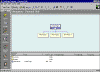
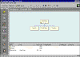

| ||||
Your Personal Web will consist of four pages that will be linked together. When you first constructed the Personal Web, FrontPage created the first of these pages, called the home page.
The home page is the front door to every Web site. It is the page that is displayed by default in the Web browser when you visit a Web site. The home page that FrontPage created in the previous steps will eventually contain hyperlinks to the other pages in your FrontPage-based Web site.
To finish creating your Personal Web's site structure, you will now use the Navigation view to add three new pages below the home page.
Figure 1. New Page button
Selected pages in the Navigation view are displayed in blue.
FrontPage adds a new page labeled "New Page 1" below the home page in the Navigation pane.
FrontPage adds two more pages below the home page, labeled "New Page 2" and "New Page 3."

Click image to enlargeFigure 2. The home page, plus three new pages
Note the hierarchical structure between the four pages. The Navigation view shows the pages connected by lines -- much like the relationship of fields in an organizational chart. This is the hyperlink structure that FrontPage will use to generate navigation bars on your pages.
Before working with the pages you have just created, you should give each page a meaningful title. Page titles not only help you identify and distinguish the pages in your FrontPage-based Web site, they are also displayed in the title bar of the FrontPage Editor, as well as your Web browser. You can change page titles without leaving the Navigation view.
FrontPage highlights the left page below the home page and activates its page title for editing.
FrontPage changes the page title "New Page 1" to "Interests."
FrontPage highlights the middle page below the home page and activates its page title for editing.
FrontPage highlights the right page below the home page and activates its page title for editing.
Your screen should now look like this:

Click image to enlargeFigure 3. Adding titles to the three new pages
Any changes you make to the site structure in the FrontPage Explorer's Navigation view are not actually applied until you take one of several actions, including switching views in the FrontPage Explorer, switching to another Windows application, or opening a page in the FrontPage Editor.
Figure 4. Undo button
If you make a mistake or change your mind about a modification you have made, you can use the Undo button on the FrontPage Explorer's toolbar to undo the last action.
Did you find this material useful? Gripes? Compliments? Suggestions for other articles? Write us!
© 1999 Microsoft Corporation. All rights reserved. Terms of use.